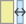
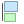
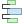
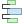

22.2.1. Layout Items Common Options
QGIS provides a large set of items to layout a map. They can be of map, legend, scale bar, picture, table, north arrow, image type… They however share some common options and behavior that are exposed below.
22.2.1.1. Creating a layout item
Items can be created using different tools, either from scratch or based on existing items.
To create a layout item from scratch:
Select the corresponding tool either from the menu or the Toolbox bar.
Then:
Click on the page and fill the size and placement information requested in the New Item Properties dialog that pops up (for details, see Position and Size);

Fig. 22.9 New Item properties dialog
Or click-and-drag to define the initial size and placement of the item. You can rely on grids and guides snapping for a better position.
Note
Because they can have particular shapes, drawing node or arrow items does not work with one-click nor click-and-drag methods; you need to click and place each node of the item. See The Node-Based Shape Items for more details.
You can also:
Select an existing item with the
 Select/Move item button
from the Toolbox toolbar
Select/Move item button
from the Toolbox toolbarUse the contextual menu or the menu tools to copy/cut the item and paste it at the mouse position as a new item.
You can also use the Paste in Place (Ctrl+Shift+V) command to duplicate an item from one page to another and place it in the new page at the same coordinates as the original.
Moreover, you can create items using a print layout template (for details, see The Layout Manager) through the command.
Tip
Add layout items using the file browser
From your file browser or using the Browser panel,
drag-and-drop a print layout template (.qpt file) onto a print layout dialog
and QGIS automatically adds all items from that template to the layout.
22.2.1.2. Interacting with layout items
Each item inside the print layout can be moved and resized to create a perfect layout.
For both operations the first step is to activate the Select/Move item tool
and click on the item.
You can select multiple items with the Select/Move item button:
click and drag over the items or hold the Shift button
and click on each of the items you want.
To deselect an item, click on it holding the Shift button.
Each time there’s a selection, count of selected items is displayed on the status bar. Inside the menu, you can find actions to select all the items, clear all selections, invert the current selection and more…
Moving and resizing items
Unless option is unchecked, a selected item will show squares on its boundaries; moving one of them with the mouse will resize the item in the corresponding direction. While resizing, holding Shift will maintain the aspect ratio. Holding Alt will resize from the item center.
To move a layout item, select it with the mouse and move while holding the left button. If you need to constrain the movements to the horizontal or vertical axis, hold the Shift button on the keyboard while moving the mouse. You can also move a selected item using the Arrow keys on the keyboard; if the movement is too slow, you can speed it up by holding Shift. If you need better precision, use the Position and size properties, or grid/guides snapping as explained above for item’s creation.
Resizing or moving several items at once is made the same way as for a single item. QGIS however provides some advanced tools to automatically resize a selection of items following different rules:
each item height matches the
 tallest or the
tallest or the  shortest selected item;
shortest selected item;each item width matches the  widest or the
 narrowest selected item;
narrowest selected item;resizes items to squares: each item is enlarged to shape a square.
Likewise, there are tools available to organize multiple items position by distributing equidistantly:
edges (left, right, top or bottom) of items;
centers of items horizontally or vertically;
spacing between items horizontally or vertically.
Grouping items
Grouping items allows you to manipulate a set of items like a single one: you can easily resize, move, delete, copy the items as a whole.
To create a group of items, select more than one and press the  Group button
on the menu or the Actions toolbar, or from the right-click menu.
A row named
Group button
on the menu or the Actions toolbar, or from the right-click menu.
A row named Group is added to the panel and can be locked or hidden
like any other Items panel’s object.
Grouped items are not individually selectable on the canvas;
use the Items panel for direct selection and access the item’s properties panel.
Locking items
Once you have found the correct position for an item, you can lock it
by using the  Lock selected items button in the menu
or the Actions toolbar, or ticking the box next to the item in the panel.
Locked items are not selectable on the canvas.
Lock selected items button in the menu
or the Actions toolbar, or ticking the box next to the item in the panel.
Locked items are not selectable on the canvas.
Locked items can be unlocked by selecting the item in the panel and unchecking the tickbox or you can use the icons on the toolbar.
Alignment and distribution
Tools for raising or lowering the Z position of items in the layout
are inside the  Raise selected items pull-down menu.
Choose an element on the print layout canvas and select the matching functionality
to raise or lower the selected element over the other elements.
This order is shown in the panel.
You can also raise or lower objects in the panel
by clicking and dragging an object’s label in this list.
Raise selected items pull-down menu.
Choose an element on the print layout canvas and select the matching functionality
to raise or lower the selected element over the other elements.
This order is shown in the panel.
You can also raise or lower objects in the panel
by clicking and dragging an object’s label in this list.
Fig. 22.10 Alignment helper lines in the print layout
There are several alignment options available within the  Align selected items pull-down menu (see Fig. 22.10). To use an alignment function, you first select the elements and then click on one of the alignment icons:


{kind=link}
{kind=link}
{kind=link}
{kind=link}
{kind=link}
All selected elements will then be aligned to their common bounding box. When moving items on the layout canvas, alignment helper lines appear when borders, centers or corners are aligned.
Another way to improve layout items placement is by adjusting the spacing between them, over the layout page.
This can be done by selecting the items and press the  Distribute Left Edges drop-down menu to:
Distribute Left Edges drop-down menu to:
- Distribute Left Edges or
 Distribute Right Edges of items equidistantly
Distribute Right Edges of items equidistantly  Distribute Top edges or
Distribute Top edges or  Distribute Bottom Edges of items equidistantly
Distribute Bottom Edges of items equidistantly Distribute Horizontal Centers or
Distribute Horizontal Centers or  Distribute Vertical Centers of items equidistantly
Distribute Vertical Centers of items equidistantlyAdd equal space between items:
 Distribute Horizontal Spacing Equally
or Distribute Vertical Spacing Equally
Distribute Horizontal Spacing Equally
or Distribute Vertical Spacing Equally
{kind=link}
22.2.1.3. Items Common Properties
Layout items have a set of common properties you will find at the bottom of the Item Properties panel: Position and size, Rotation, Frame, Background, Item ID, Variables and Rendering (see Fig. 22.11).

Fig. 22.11 Common Item Properties groups
Note
The  Data defined override icon next to most of the options
means that you can associate that property with a layer, features
attributes, geometry or with any other layout item’s property,
using expressions or variables.
For more information see Data defined override setup.
Data defined override icon next to most of the options
means that you can associate that property with a layer, features
attributes, geometry or with any other layout item’s property,
using expressions or variables.
For more information see Data defined override setup.
The Position and size group lets you define the size and position of the frame which contains the item (see Position and Size for more information).
The Rotation sets the rotation of the element (in degrees).
The
 Frame shows or hides the frame around the item.
Use the Color, Thickness and Join style widgets
to adjust those properties.
Frame shows or hides the frame around the item.
Use the Color, Thickness and Join style widgets
to adjust those properties.In the Background group you can create or pick a background Color. Transparency can be adjusted through altering the alpha field settings.
Use the Item ID to create a relationship to other print layout items. This is used with QGIS server and other potential web clients. You can set an ID on an item (for example, a map or a label), and then the web client can send data to set a property (e.g., label text) for that specific item. The GetProjectSettings command will list the items and IDs which are available in a layout.
Rendering mode helps you set whether and how the item can be displayed: you can, for instance, apply blending mode, adjust the opacity of the item or Exclude item from exports.
Position and Size
Extending the features of the New Item Properties dialog with data-defined capabilities, this group allows you to place the items accurately.

Fig. 22.12 Position and size
the actual number of the page to place the item on;
the reference point of the item;
the X and Y coordinates of the Reference point of the item on the chosen page. The ratio between these values can be locked by clicking on the
 button.
Changes made to a value using the widget or the Select/Move item tool
will be reflected in both of them;
button.
Changes made to a value using the widget or the Select/Move item tool
will be reflected in both of them;the Width and Height of the item bounding box. As for coordinates, the ratio between width and height can be locked.
Rendering mode
QGIS allows advanced rendering for layout items just like vector and raster layers.

Fig. 22.13 Rendering mode
Blending mode: With this tool you can achieve effects which would otherwise only be achieved using graphic rendering software. The pixels of your overlaying and underlaying items can be mixed according to the mode set (see Blending Modes for description of each effect).
Opacity: You can make the underlying item in the layout visible with this tool. Use the slider to adapt the visibility of your item to your needs. You can also make a precise definition of the percentage of visibility in the menu beside the slider.
- Exclude item from exports: Combined with data-defined expressions,
you can decide to make an item invisible in some exports.
After activating this checkbox, the item will not be included in export to PDF, print etc..
Variables
The Variables lists all the variables available at the layout item’s level (which includes all global, project and layout’s variables). Layout map items alhave an additional Map settings section for variables that provide easy access to values like the map’s scale, extent, and so on.
In Variables, it’s also possible to manage layout item level variables.
Click the  button to add a new custom variable.
Likewise, select any custom item-level variable from the list
and click the
button to add a new custom variable.
Likewise, select any custom item-level variable from the list
and click the  button to remove it.
button to remove it.
More information on variables usage in the Storing values in Variables section.